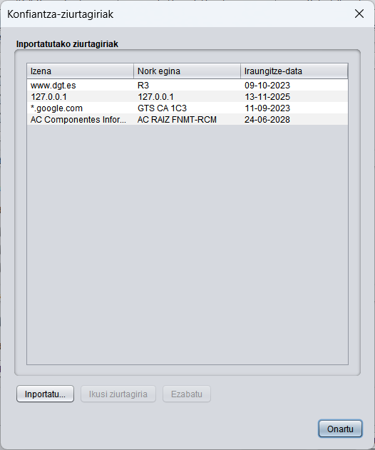
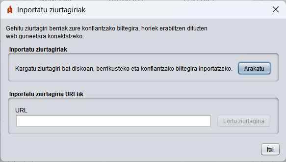
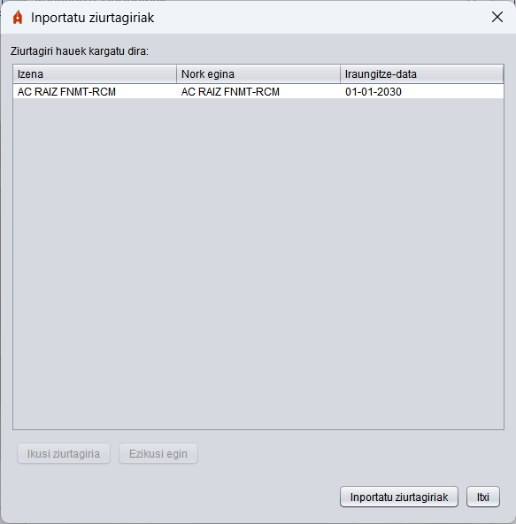

Konfiantza-ziurtagiriak
Autofirmak urruneko zerbitzarietarako konexioak egiten ditu hainbat funtziotarako. Atal honetan, Autofirmaren konfiantzako biltegira inportatu daitezke Autofirma konektatzen den zerbitzarien ziurtagiriak, konfiantzazkotzat har ditzaten.

Pantaila honetako aukerak hauek dira:
- Inportatu: Aukera hau hautatzean, elkarrizketa bat irekiko da, eta, horren bidez, ziurtagiri bat inportatu ahal izango da, fitxategia bide lokal batetik edo URL batetik hautatuta. Tokian bertan zenbatuz gero, fitxategi bat edo gehiago hauta daitezke, eta URL bidez inportatuz gero, igorlea eta haren goi-ziurtagiriak inportatuko dira ziurtapen-katetik.

Ziurtagiriak lortu ondoren, kargatutako ziurtagirien pantaila hau agertuko da.

Leiho honetako aukerak hauek dira:
- Ziurtagiria ikusi: Zerrendan hautatutako ziurtagiriaren informazioa duen leihoa irekitzen du.
- Ezikusi: Zerrendan hautatutako ziurtagiria baztertzen du, inportatu ez dadin.
- Inportatu ziurtagiriak: Zerrendan adierazitako ziurtagiriak Autofirmaren konfiantza-biltegira inportatzen ditu.
- Itxi: Leihoa ixten du.
- Ziurtagiria ikusi: Zerrendan hautatutako ziurtagiriaren informazioa duen leihoa irekiko du.
- Ezabatu: Autofirmaren konfiantza-biltegitik hautatutako ziurtagiria ezabatzeko aukera ematen du.
Ados botoia sakatuz gero, leihoa itxiko da.